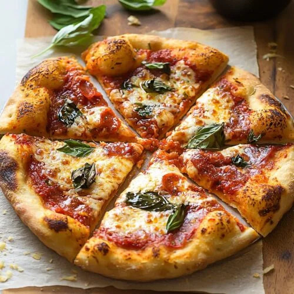

Homemade Pizza

Description
This is a classic homemade pizza with soft dough, rich tomato sauce, and melted cheese baked until golden and crispy.
Ingredients:
Pizza Dough:
- 2 ¼ teaspoons active dry yeast, 1 packet
- 1 ½ cups warm water
- 3 ½ cups all-purpose flour
- 2 tablespoons olive oil
- 1 teaspoon sugar
- 1 teaspoon salt
Pizza Sauce:
- 1 cup marinara sauce
- 1 tablespoon olive oil
- 1 teaspoon Italian seasoning
- ½ teaspoon garlic powder
- ¼ teaspoon salt
Toppings:
- 2 cups mozzarella cheese, shredded
- Pepperoni slices
- Cooked sausage
- Sliced mushrooms
- Bell peppers, sliced
- Extra Parmesan cheese
Steps:
Prep Work
- Measure out all ingredients before starting.
- Preheat oven to 475°.
Make the Dough
- In a bowl, combine warm water, sugar, and yeast. Let sit for 5 minutes until foamy.
- Add flour, olive oil, and salt.
- Mix until dough forms, then knead for about 8–10 minutes until smooth.
- Place dough in a greased bowl, cover, and let rise for 1 hour.
Make the Sauce
- In a small bowl, combine marinara sauce, olive oil, Italian seasoning, garlic powder, and salt.
- Stir until well mixed and set aside.
Shape the Pizza
- Punch down the dough and place on a floured surface.
- Roll or stretch the dough into a circle.
- Place dough on a pizza pan or baking sheet.
Assemble
- Spread sauce evenly over the dough.
- Sprinkle mozzarella cheese on top.
- Add desired toppings.
- Finish with a little extra Parmesan cheese.
Bake
- Bake for 12–15 minutes until crust is golden and cheese is melted.
- Remove from oven and let cool for a few minutes.
- Slice and serve.